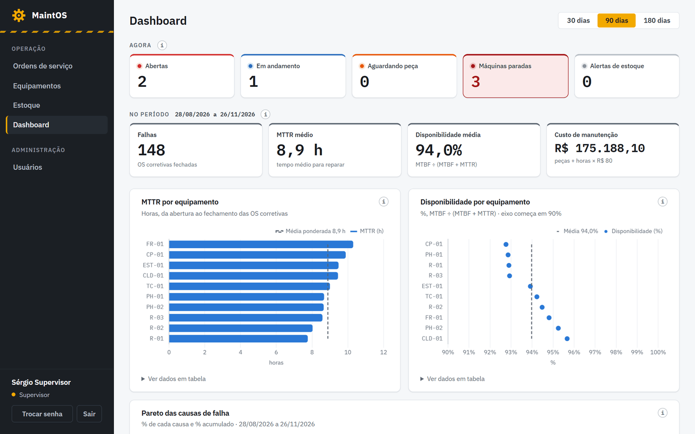

Ordens de serviço
O operador abre a OS com o equipamento, a prioridade e a falha. O técnico assume, executa e fecha registrando causa, solução, horas e peças. Cada mudança de status fica no histórico, com quem fez e quando.
Gestão de manutenção industrial (CMMS)
Ordens de serviço, estoque de peças e indicadores de manutenção da fábrica num só painel. Da falha relatada ao MTTR do mês, sem planilha.
ou escreva para davimguerra@gmail.com

O operador abre a OS com o equipamento, a prioridade e a falha. O técnico assume, executa e fecha registrando causa, solução, horas e peças. Cada mudança de status fica no histórico, com quem fez e quando.
As peças usadas saem do estoque no fechamento da OS, tudo numa única transação: se faltar uma peça, nada é gravado. Abaixo do mínimo, o sistema gera um alerta, que se resolve sozinho quando chega a reposição.
MTTR, o tempo médio para reparar, e MTBF, o tempo médio entre falhas, por equipamento. Além disso: disponibilidade, custo de manutenção, Pareto das causas de falha e as peças mais consumidas, em 30, 90 ou 180 dias.
Quem viu a falha abre a ordem de serviço, com o equipamento e a prioridade, de baixa a emergência.
O técnico assume a OS, faz o reparo e a fecha com as peças usadas. Se faltar peça, ela fica aguardando peça.
O painel atualiza MTTR, MTBF, disponibilidade e custo e aponta as causas que mais param a fábrica.
Hoje, cada fábrica recebe a sua própria instalação do MaintOS: servidor, banco de dados e endereço exclusivos. Os dados de uma empresa nunca dividem banco com os de outra, e os usuários e perfis (operador, técnico, supervisor) são cadastrados pelo supervisor da própria fábrica.
Quer ver o sistema funcionando com os seus equipamentos? Peça uma demonstração.
E-mail para contato